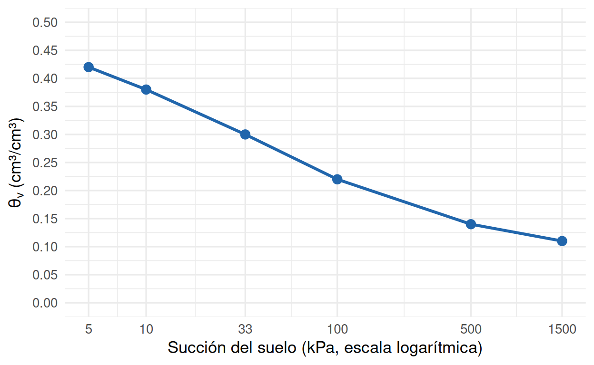
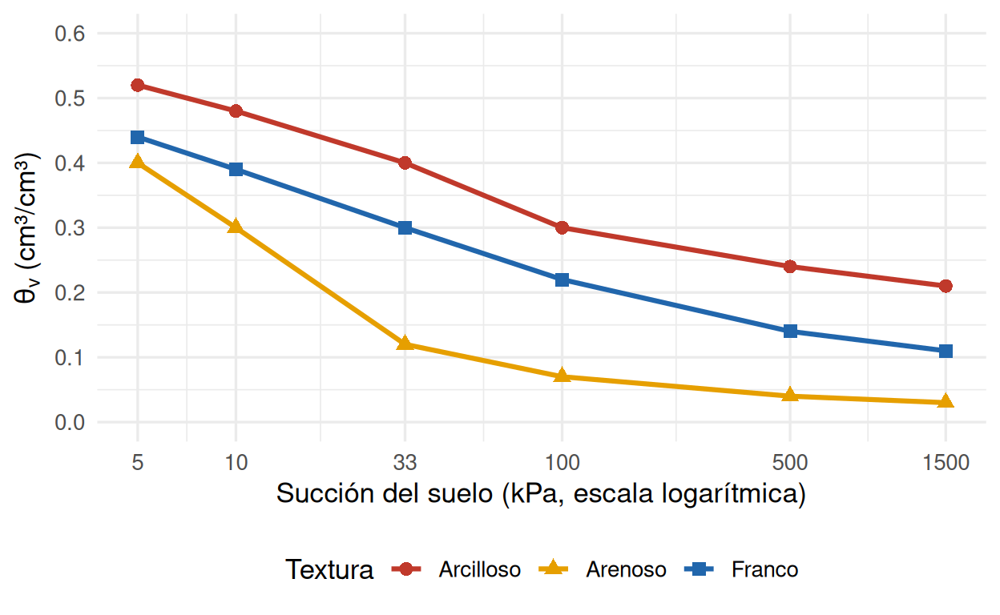

Cátedra 1 — Relación Suelo Agua Planta
Unidad 1 y Unidad 2 (hasta la sesión 2.3) · RAA1–RAA4
| Asignatura | TAG2027 — Relación Suelo Agua Planta |
| Evaluación | Cátedra 1 (Unidades 1–2 · RAA1–RAA4) |
| Nombre | |
| RUT | |
| Sección / Fecha | |
| Duración | 90 minutos |
| Puntaje total | 100 puntos |
| Exigencia | 60% (nota 4.0 ≈ 60 puntos) |
0.1 Instrucciones generales
- Lee cada pregunta con atención antes de responder.
- En los ejercicios de cálculo, escribe siempre: dato → fórmula → cálculo → unidad y una interpretación agronómica de una línea. Un número sin interpretación no se considera completo.
- En los ejercicios de lectura de gráfico, indica el valor leído, la fórmula y el cálculo; la interpretación es parte del puntaje.
- En las preguntas de conceptos, responde con tus propias palabras y justifica brevemente.
- Puedes usar calculadora, pero no material impreso ni aplicaciones de terceros.
- Integridad académica: toda respuesta debe ser elaboración propia. El uso de IA u otras fuentes no autorizadas, o la copia entre compañeros, se rige por el Reglamento del Alumno UDLA (Art. 72) y puede significar nota 1.0.
- Distribución sugerida del tiempo: Parte A ≈ 40 min · Parte B ≈ 50 min.
0.2 Fórmulas y constantes de referencia
| Magnitud | Expresión |
|---|---|
| Potencial hídrico total | \(\Psi = \Psi_m + \Psi_o + \Psi_g + \Psi_p\) |
| Densidad aparente | \(D_a = M_s / V_t\) (g/cm³) |
| Densidad real (suelo mineral) | \(D_r \approx 2.65\) g/cm³ |
| Porosidad total | \(P = \left(1 - D_a/D_r\right) \times 100\) (%) |
| Contenido gravimétrico | \(\theta_g = (M_{húmedo} - M_{seco})/M_{seco}\) (g/g) |
| Contenido volumétrico | \(\theta_v = \theta_g \times D_a\) (cm³/cm³), con \(\rho_{agua} \approx 1.0\) g/cm³ |
| Lámina de agua | \(L = \theta_v \times Z\) (mm), \(Z\) en mm |
| Agua disponible total | \(ADT = CC - PMP\) (cm³/cm³) |
| Lámina neta / bruta | \(L_n = (\theta_{CC} - \theta_{actual}) \times Z_r\) ; \(L_b = L_n / E_a\) |
| Huella hídrica | \(HF = \text{volumen de agua (L)} / \text{producción (kg)}\) |
Conversiones: \(1\) m³ \(= 1000\) L · \(1\) mm \(= 1\) L/m² · \(1\) ha \(= 10{,}000\) m² · \(1\) MPa \(= 1000\) kPa \(= 10\) bar.
Puntos hídricos: Saturación \(\Psi_m = 0\) kPa · Capacidad de Campo (CC) \(\Psi_m = -33\) kPa · Punto de Marchitez Permanente (PMP) \(\Psi_m = -1500\) kPa.
1 Parte A — Preguntas de conceptos (50 puntos)
1.1 A.1 — Propiedad del agua (10 puntos)
Relaciona cada fenómeno con la propiedad del agua que lo explica. Usa cada propiedad una sola vez.
Propiedades: cohesión · adhesión · tensión superficial · calor específico · poder disolvente.
| Fenómeno | Propiedad |
|---|---|
| 1. El suelo húmedo se calienta más lento que el suelo seco. | |
| 2. La savia asciende por el xilema de un árbol de 30 m. | |
| 3. Los iones \(\text{NO}_3^-\) y \(\text{K}^+\) viajan disueltos hacia la raíz. | |
| 4. El agua asciende por poros finos contra la gravedad. | |
| 5. El agua se adhiere a la superficie de las arcillas y paredes celulares. |
1.2 A.2 — El continuo suelo-planta-atmósfera (6 puntos)
Ordena los compartimentos del SPAC desde el potencial hídrico menos negativo al más negativo, indicando un valor típico de potencial (en MPa) para cada uno. Luego indica en qué dirección se mueve el agua y por qué.
Compartimentos: Suelo · Raíz · Xilema · Hoja · Atmósfera.
1.3 A.3 — Componente dominante del potencial hídrico (8 puntos)
Un predio de la zona costera riega con agua de pozo de alta salinidad. Indica qué componente(s) del potencial hídrico (\(\Psi_m\), \(\Psi_o\), \(\Psi_g\), \(\Psi_p\)) domina(n) en cada compartimento.
| Compartimento | Componente(s) dominante(s) |
|---|---|
| 1. Suelo no saturado | |
| 2. Suelo con alta salinidad | |
| 3. Célula turgente de la hoja | |
| 4. Columna de agua del xilema |
1.4 A.4 — Interpretación de una medición (8 puntos)
En un mismo predio se miden dos suelos que, en ese momento, tienen la misma humedad volumétrica \(\theta_v = 0.30\) cm³/cm³: uno arenoso (CC ≈ 0.12, PMP ≈ 0.03) y otro arcilloso (CC ≈ 0.40, PMP ≈ 0.21).
¿En cuál de los dos hay más agua disponible para la planta en ese momento? Justifica tu respuesta usando CC y PMP.
1.5 A.5 — Textura, estructura y manejo (8 puntos)
Explica la diferencia entre textura y estructura del suelo. ¿Cuál de las dos puede modificar un agricultor y mediante qué práctica(s) concreta(s)?
1.6 A.6 — Los tres parámetros hídricos (10 puntos)
Define Saturación (S), Capacidad de Campo (CC) y Punto de Marchitez Permanente (PMP), indicando el potencial mátrico (\(\Psi_m\)) de cada uno y qué tipo de agua queda en cada rango (gravitacional, disponible o no disponible).
2 Parte B — Ejercicios (50 puntos)
2.1 B.1 — Huella hídrica del palto (10 puntos)
Un predio de 50 ha de palto en la V Región produce 12 ton/ha·año. El riego aplicado es 12,000 m³/ha·año (toda el agua es de pozo = huella azul). La lluvia efectiva es 180 mm/año (huella verde). El nitrógeno lixiviado requiere 300 m³/ha·año para su dilución (huella gris).
Calcule:
- Huella azul (L/kg).
- Huella verde (L/kg).
- Huella gris (L/kg).
- Huella total (L/kg) y compárela con el promedio global (2,080 L/kg).
2.2 B.2 — Lámina de riego y elección de sistema (10 puntos)
Un agricultor cultiva tomate en suelo franco con \(CC = 0.32\) cm³/cm³. La humedad actual es \(\theta = 0.20\) cm³/cm³ y la profundidad radical es \(Z_r = 0.6\) m.
Calcule:
- Lámina neta (\(L_n\)) necesaria para llevar el suelo a capacidad de campo.
- Lámina bruta (\(L_b\)) si riega por goteo (\(E_a = 0.90\)).
- Lámina bruta (\(L_b\)) si riega por surco (\(E_a = 0.55\)). ¿Cuánta agua se ahorra con goteo respecto del surco?
2.3 B.3 — Lectura de la curva de retención (10 puntos)
La Figura B.3 muestra la curva de retención de agua de un suelo franco (\(\theta_v\) vs. succión, en escala logarítmica).
Responda:
- Lea de la curva el valor de \(\theta_v\) a −33 kPa (CC) y a −1500 kPa (PMP).
- Calcule el agua disponible total (ADT).
- Si la humedad actual es \(\theta_v = 0.20\) cm³/cm³, ¿el suelo está por sobre o por debajo de CC? ¿Qué implica para el riego?
- Si a saturación el suelo tiene \(\theta_v \approx 0.48\) cm³/cm³, ¿qué porcentaje de esa agua está realmente disponible para la planta?
2.4 B.4 — Comparación de curvas por textura (10 puntos)
La Figura B.4 muestra las curvas de retención de tres suelos de distinta textura (escala logarítmica en el eje x).

Responda:
- ¿Cuál textura retiene más agua total a CC? ¿Y a PMP?
- Estime de la curva la CC y el PMP de cada textura y calcule el ADT de cada una.
- ¿Cuál textura tiene más agua disponible? Explique por qué el arcilloso, pese a retener más agua total, tiene un ADT similar al del franco.
2.5 B.5 — De la muestra de campo a la lámina (10 puntos)
Se extrae una muestra con un cilindro de diámetro 5.0 cm y altura 5.1 cm. La masa húmeda fue 190 g y, tras secar a 105 °C, la masa seca fue 160 g (\(D_r = 2.65\) g/cm³). La profundidad radical del cultivo es \(Z_r = 0.7\) m.
Calcule:
- Densidad aparente (\(D_a\)).
- Porosidad total (\(P\)).
- Contenido gravimétrico de agua (\(\theta_g\)).
- Contenido volumétrico de agua (\(\theta_v\)).
- Lámina de agua actual en la zona radical (mm).